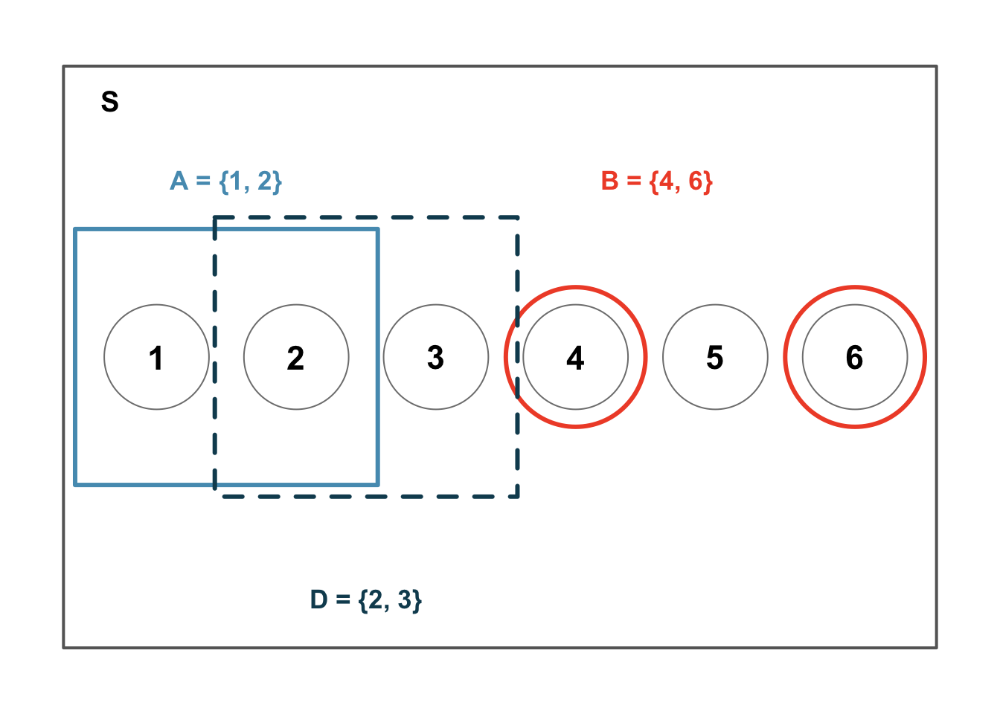

5.1 Probability Rules
Probability forms the foundation of statistics, and you are probably already aware of many of the ideas we will discuss in this chapter. However, formalizing these concepts is likely new. While this chapter provides the theoretical foundation for the inference methods you have already been using, it also offers practical tools for reasoning about uncertainty. We will define probability, develop rules for combining probabilities, and explore conditional probability and independence, all concepts that underpin the inference methods from Parts II and III.
Key Concepts
- Compute the probability of events if outcomes are equally likely
- Identify when a probability question is asking for A and B, A or B, not A, or A if/given B
- Use the complement, additive, multiplicative, and conditional rules to compute probabilities of events
- Recognize when two events are disjoint
Defining Probabilities
Statistics is built on probability, and probability gives us the language to describe uncertainty. We begin with a few simple examples that may feel familiar.
Class Example 5.1.1: Roll a fair die
A “die”, the singular of “dice”, is a cube with six faces numbered 1, 2, 3, 4, 5, and 6.
- What is the chance of getting a 1 when rolling a fair die?
- What is the chance of getting a 1 or 2 on the next roll?
- What is the chance of not rolling a 2?
The probability of an event is the proportion of the times the event would occur if we observed the random process an infinite number of times. Probabilities are always between 0 and 1.
Sample space, \(\Omega\), is the set of all possible outcomes.
An event is a subset of the sample space, that is, a collection of one or more outcomes.
We use the notation \(P( )\) to mean probability of.
We use the notation \(N()\) to mean number of outcomes in an event.
When outcomes are equally likely, the probability of event is the number of outcomes in the event divided by the total number of outcomes.
We use probability to describe and understnad apparent randomness. Recall that a population is the collection of all individuals or items under consideration. An individual could refer to a person, a playing card, or whatever object we are interested in. We typically refer to a population when referencing sampling. However, when we talk about experiments, we use the phrase sample space. The sample space is the set of all possible non-overlapping outcomes for a random experiment, and is denoted \(\Omega\). Events can be simple (e.g., the outcome of a single flip of a coin) or complex combinations of outcomes (e.g., the results from 10 flips of a coin). We have three important rules for probability:
P.1) Any probability must be between 0 and 1 (inclusive)
P.2) When outcomes are equally likely, the probability of the event \(E\) is given by
\[ P(E) = \frac{N(E)}{N(\Omega)} \]
P.3) The sum of the probabilities for all of the experimental outcomes must equal 1
Class Example 5.1.2: Roll a fair die, continued
Define the sample space for rolling a die.
We can visualize the sample space along with several events. Let \(A\) represent the event that the die roll results in a 1 or a 2, so \(A = \{1, 2\}\). Let \(B\) represent the event that the die roll is a 4 or 6, so \(B = \{4, 6\}\).
The complement rule
The complement of a condition, written “not A” or \(A^c\), includes events in which the condition does not happen.
Let \(D = \{2, 3\}\) represent the event that the outcome of a die roll is a 2 or 3. Then the complement of \(D\), denoted \(D^c\), represents all outcomes in the sample space that are not in \(D\).
Class Example 5.1.3: Roll a fair die, continued
- Write out the event for the complement of \(D\) and find its probability.
- What is \(P(D) + P(D^c)\)?
P.4) P(not A) = \(P(A^c)\) = Probability A does not occur is given by
\[ P(A^c) = 1 - P(A) \]
Class Example 5.1.4: Two rolls of a fair die
Suppose a fair, six-sided die is rolled twice. Determine the following.
a)\(N(\Omega)\)
b)\(N(A)\), where \(A\) is the event that the sum of the two rolls is 5
c)\(P(B)\), where \(B\) is the event that the two rolls are the same
d)\(P(C)\), where \(C\) is the event that the sum of the two rolls is even
e)\(P(D)\), where \(D\) is the event that the two rolls are not the same
The addition rule
The joint or intersection of two conditions, written “A and B” or\(A \cap B\), includes events that satisfy both conditions.
The union of two conditions, written “A or B” or\(A \cup B\), includes events that satisfy either or both conditions.
The conditional occurrence of condition A given the occurrence of condition B is written “A if B” or\(A \mid B\).
Many of the terms we used for describing the relationship between two categorical variables is also used when describing events matching two (or more) conditions. In addition to the ideas of joint, marginal, and conditional proportions, we will use terms like intersection, and union of conditions.
- P(A and B) = \(P(A \cap B)\) = Probability conditions A and B both occur.
- P(A or B) = \(P(A \cup B)\) = Probability either condition A or condition B (or both) occur.
Events are disjoint if they cannot occur at the same time.
Two outcomes or events are called disjoint, or mututally exclusive, if they cannot both happen at the same time. For instances event \(A\) and event \(B\) in the die rolling example are disjoint since they cannot both occur at the same time.
P.5) If \(A_1\) and \(A_2\) are disjoint events, then: \[ P(A_1\text{ or }A_2) = P(A_1) + P(A_2) \] More generally, if \(A_1, A_2, \dots, A_k\) are all mutually disjoint, then: \[ P(A_1\text{ or }A_2 \text{ or } \cdots \text{ or } A_k) = P(A_1) + \cdots + P(A_k) \]
Class Example 5.1.5: Roll a fair die, revisited
We are interested in the probability of rolling a 1, 4, or 5.
- Explain why the outcomes 1, 4, and 5 are disjoint.
- Apply the addition rule to determine \(P(1\text{ or }4\text{ or }5)\).
When events are not disjoint, we cannot simply add their probabilities, doing so would double-count the outcomes they share.
P.6) Additive Rule: \[ P(A \cup B) = P(A) + P(B) - P(A \cap B) \]
For disjoint events \(P(A\text{ or }B) = 0\). If we replace \(P(A\text{ or }B)\) with 0 in the addition rule above, we see that for disjoint events \[ P(A \cup B) = P(A) + P(B) \]
Class Example 5.1.6: Two rolls of a fair die, revisited
We had the following events: \(A\) = sum of the two rolls is 5, \(B\) = the two rolls are the same, \(C\) = the sum of the two rolls is even.
- Circle the pairs of events that are disjoint: A and B; A and C; B and C.
- Find the probability of the union for all three pairs listed in part a).
Class Example 5.1.7: Deck of Cards
Consider a standard deck of 52 cards. In a standard deck, there are 2 colors: red and black. The red cards are split into two suits: diamonds and hearts. The black cards are split into clubs and spades. Each suit has 13 cards 2 through 10, jack, queen, king, ace. Let \(A\) be the event “the card is a diamond” and \(B\) “the card is a face card (jack, queen, or king).” Find the probability that a random card is a diamond or a face card.
Venn diagrams
Venn diagrams are visual displays that are useful for investigating intersections, unions, and complements. These diagrams are constructed by first drawing a rectangle, representing the sample space. Within this rectangle, overlapping circles are drawn for each of the conditions of interest.
Example 19.8 Types of classes
If 60% of college freshmen take a math class, 30% of college freshmen take a history class, and 12% of college freshmen take both a college math class and history class, what is the probability that a freshman selected at random is in a math or history class?
Example 19.9 La Crosse pets
Suppose 35% of households in La Crosse have a dog, 28% of households in La Crosse have a cat, and 52% of households in La Crosse have a dog or a cat. What is the probability that a La Crosse household selected at random has a dog and a cat?
Conditional Probabilities
The conditional occurrence of A given the occurrence of B is written “A if B” or “A given B” or A j B.
Conditional probability is used in situations where we find the probability of one event occurring, if/given we know another event has occurred. To find the conditional probability of an event A occurring if/given B occurs, we use
P.7) Conditional Probability: \(P(A|B) = \frac{P(A \cap B)}{P(B)}\)
Example 19.10 Types of classes, revisited
If you know a selected student is in a math class, what is the probability they are in a history class?
A marginal probability is a probability based on a single value, without regard to the other variables. A joint probability is the probability of two or more outcomes occurring together.
The multiplication rule
If we rearrange the formula in P.7 we can solve for \(P(A \cap B)\) and this is know as the multiplication rule.
P.8) Multiplication Rule:
\[ \begin{aligned} P(A \cap B) &= P(B | A) * P(A) \\ &= P(A | B) * P(B) \end{aligned} \]
Example 19.11 Baseball games
A Little League baseball team has a projected 80% chance of winning their first game in a tournament. If they win their first game, they are projected to win their second game with 60% probability. What is the probability that they win both their first and second game?
Events \(A\) and \(B\) are independent if knowing that one of the events has occurred does not change the probability of the other event occurring. Mathematically, events A and B are independent whenever
P.9) Independent events satisfy: \[ \begin{aligned} P(A | B) &= P(A) \\ P(B | A) &= P(B) \end{aligned} \]
When events are independent, the multiplication rule becomes the more simplified form of
P.10) Multiplication Rule for Independent Events: \[P(A \cap B) = P(A) \times P(B) \]
Class Example 5.1.8: Flipping a fair coin
Suppose we have a fair coin.
- Suppose we flip the coin two times, are the flips independent of one another?
- Suppose that the first three flips were HHT. What is the probability the\(4^{th}\)flip is heads?
- Suppose that the first three flips were TTT. What is the probability the\(4^{th}\)flip is tails?
- What is the probability of the event the 4 flips were HHTH?
- What is the probability of the event the 4 flips were TTTT?
Example 19.13 Bin of marbles
A jar contains 20 blue marbles, 30 red marbles, and 50 yellow marbles. You select two marbles, one at a time, without looking. Find the following probabilities.
- The probability that the second marble is red if the first marble was blue. You have not replaced the blue marble before drawing the second marble.
- The probability that the second marble is red if the first marble was blue. You have replaced the blue marble before drawing the second marble.
- The probability that the first marble is blue and the second marble is red. You have not replaced the blue marble before drawing the second marble.
- The probability that the first marble is blue and the second marble is red. You have replaced the blue marble before drawing the second marble.
Class Example 5.1.9: Relationship status and class year revisited
Recall the following example from Unit 1. 169 college students were asked about relationship status and class year (lower=freshman/sophomore, upper=junior/senior). The results are given in the table below. For each of the following, assume that a student is chosen at random from this sample.
| Female | Upper | Lower | |
|---|---|---|---|
| In a relationship | 32 | 10 | 42 |
| It’s complicated | 12 | 7 | 19 |
| Single | 63 | 45 | 108 |
| Total | 107 | 62 | 169 |
- What is the probability the student is in a relationship? Is this a joint, marginal, or conditional probability?
- What is the probability the student is in a relationship given the student an upperclassmen? Is this a joint, marginal, or conditional probability?
- What is the probability the student is an upperclassmen given the student is in a relationship? Is this a joint, marginal, or conditional probability?
- What is the probability the student is a lowerclassmen and single? Is this a joint, marginal, or conditional probability?
Counting Rules
The basic counting rule provides the number of possible outcomes of a random experiment in which several actions are performed.
A combination is any unordered collection elements chosen from a collection of elements.
It is often useful to be able to count (enumerate) the number of possible outcomes of a random experiment. Understanding a couple of simple counting rules can help to determine probabilities of events.
C.1) Basic Counting Rule: If event \(A\) consists of \(r\) actions that are performed in a specific order, with \(m_1\) possibilities for the first action, \(m_2\) for the second, etc. Then the total outcomes in \(A\) is
\[ N(A) = m_1 * m_2 * \cdots * m_r. \]
C.2) Arranging items: If event \(A\) has \(n\) items, then the number of ways we can arrange the items in \(A\) is
\[ n! = n * (n - 1) * (n - 2) * \cdots * 2 * 1. \]
C.3) Combinations: If event \(A\) has \(n\) items, then the number of ways we can choose \(k\) items from \(A\) is
\[ \binom{n}{k} = \frac{n!}{(n - k)! * k!} \]
Class Example 5.1.10: True/False Quiz
Suppose that a professor gives her students a 10 question True/False quiz.
- How many ways are there to answer the quiz?
- How many ways are there to answer exactly 5 questions correctly?
Class Example 5.1.11: Cola Taste Test
Suppose that three glasses are filled with the same cola, and then labeled C, D, and P. A randomly selected person is asked to order the three glasses by preference (this person is unaware that all three glasses contain the same cola).
- How many ways can the cola preferences be ranked?
- What is the probability that C is ranked first?
- What is the probability that C is ranked first and D is ranked last?
Summary
In this chapter, we developed the mathematical rules of probability:
- Probability is the long-run proportion of times an outcome occurs
- The sample space \(\Omega\) is the set of all possible outcomes; an event is a subset of \(\Omega\).
- Complement rule: \(P(A) = 1 - P(A^c)\).
- Addition rule: \(P(A \text{ or } B) = P(A) + P(B) - P(A \text{ and } B)\). For disjoint events, \(P(A \text{ and } B) = 0\).
- Conditional probability: \(P(A \mid B) = P(A \text{ and } B) / P(B)\).
- Multiplication rule: \(P(A \text{ and } B) = P(A \mid B) \times P(B)\). For independent events, \(P(A \text{ and } B) = P(A) \times P(B)\).
- Events are independent if knowing one occurred does not change the probability of the other.
- It is often useful to be able to count (enumerate) the number of possible outcomes